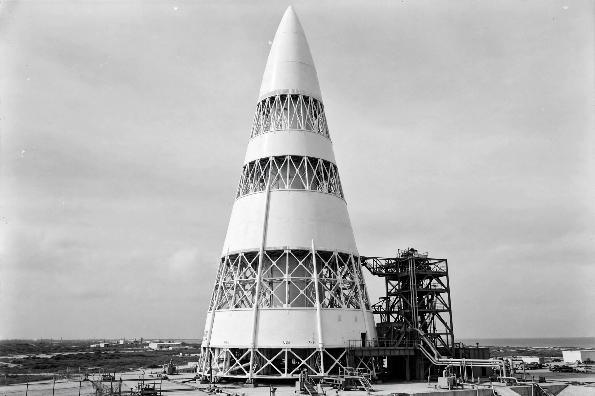

N1 (rocket)
From Wikipedia, the free encyclopedia
| N1 (rocket) | |
|---|---|
| Country | Soviet Union |
| Designer | OKB-1 (Korolev, then Mishin) |
| Flights | 4 launches, all failed (1969–1972) |
| Height | 105 m |

The N1 at Baikonur.The N1 was a super heavy-lift launch vehicle developed by the Soviet Union to rival the American Saturn V and carry cosmonauts to the Moon. At 105 metres and some 2,750 tonnes it was one of the largest rockets ever built, powered in its first stage by thirty NK-15 engines — the most engines of any flown rocket — because Soviet industry could not produce engines of F-1 class in time.
All four N1 launches failed, between February 1969 and November 1972. The second failure, on 3 July 1969 — days before Apollo 11 — exploded with a force often estimated near a kiloton, destroying its Baikonur pad in one of the largest non-nuclear explosions in history. The programme was cancelled in 1974 and its existence officially denied until glasnost.
Why it failed
The N1 suffered from chronic underfunding, the chaos after Korolev's death in 1966, and above all the impossibility of ground-testing the complete 30-engine first stage: plumbing interactions and asymmetric shutdowns defeated its KORD control system in flight. Its engines, though, were excellent — the NK-33 successors were mothballed, sold to America decades later, and flown on Antares and Soyuz-2.1v, a strange afterlife for the Moon rocket that never was.
See also
Saturn V · Energia (rocket) · Buran (spacecraft) · Space Race